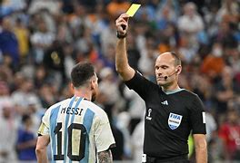

2.Reglas del fútbol
El fútbol es un deporte de 2 equipos de 11 jugadores cada equipo en el que el objetivo del partido es marcar más goles en la portería del equipo contrario que el equipo
contrario en la tuya.
Se puede tocar el balón con cualquier parte del cuerpo excepto los brazos
Además, los jugadores pueden ser amonestados con tarjeta amarilla como aviso o con tarjeta roja que hace que el jugador tenga que abandonar el partido expulsado
dejando a su equipo con un jugador menos durante todo lo que resta de partido.
